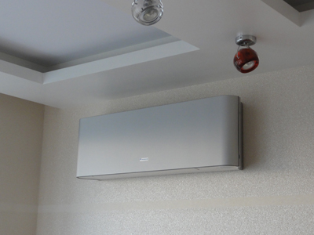
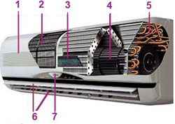
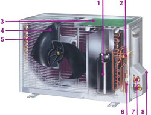

Кондиционеры настенного типа являются самыми распространенными и наиболее доступными по цене сплит-системами. Настенные кондиционеры еще называют бытовой кондиционер, домашний или комнатный кондиционер, поскольку в домах и квартирах чаще всего применяются именно они. Настенный кондиционер можно установить в любом небольшом помещении — офисе, квартире, магазине. Их мощность по холоду составляет от 2 до 7 кВт и позволяет охлаждать помещения от 15 до 70 кв. м. Внутренний блок бытовых кондиционеров обычно устанавливают в верхней части стены, недалеко от окна, а наружный — под окном. Такое размещение позволяет сократить расстояние между блоками и длину межблочных коммуникаций, которая обычно не превышает 5 … 7 метров. Отметим, что бытовые настенные кондиционеры не могут подавать в помещение свежий воздух, для этого необходима отдельная система вентиляции.
Помимо бытовых настенных кондиционеров некоторые производители выпускают полупромышленные настенные кондиционеры, имеющие мощность от 7 до 10 кВт . Внешне полупромышленные кондиционеры похожи на бытовые сплит-системы, однако по габаритным размерам, мощности, ресурсу, надежности, максимальной длине трассы и другим параметрам полупромышленные кондиционеры превосходят обычные бытовые кондиционеры. В основном полупромышленные настенные кондиционеры используются в больших помещениях или помещениях с большими теплопритоками (офисы, компьютерные залы, рестораны и т.д.). | |  |
Для кондиционирования воздуха в жилых и общественных помещениях наибольшее распространение получили сплит-системы настенного типа.
Сплит-система разделена на два блока – внутренний и внешний.
|  | | Внутренний блок
1. Передняя панель — состоит из пластика, ее легко снять для очистки фильтров и других технических работ.
2. Фильтр грубой очистки - задерживает крупные частицы, для защиты механизма (пыль, грязь, шерсть и пр.)
3. Система фильтров
4. Вентилятор - позволяет воздуху свободно циркулировать в помещении
5. Испаритель — охлаждает воздух
6. Горизонтальные жалюзи - регулируют направление воздушного потока по горизонтали
7. Индикаторная панель - показывает состояние работы кондиционера
8. Вертикальные жалюзи - регулируют направление воздушного потока по вертикали
9. Плата управления - здесь находится блок электроники с центральным микропроцессором.
10. Штуцерные соединения - к ним подключаются медные трубы, соединяющие наружный и внутренний блоки.
Внутренний блок настенной сплит-системы крепится на стене под потолком и совершенно не отнимает площади, а современный дизайн не испортит интерьера в любом помещении.
Функционально внутренний блок сплит-системы осуществляет охлаждение, нагрев, осушение воздуха, фильтрацию, а также создает необходимую подвижность обработанного воздуха. При минимальной скорости вращения вентилятора шум внутреннего блока у современных моделей кондиционеров составит 21 дБ(А) и человеку его работа почти не будет слышна, сну или отдыху работающий кондиционер не помешает.
|
|  | | Наружный блок
1. Вентилятор, охлаждающий конденсатор.
2. Конденсатор – охлаждает фреон и нагревает выходящий воздух.
3. Компрессор - сжимает хладагент и поддерживает движение его по холодильному контуру.
4. Плата управления - обычно во внешнем блоке ее устанавливают только у инверторных моделей.
5. Четырехходовой клапан - устанавливается в моделях с функцией подогрева.
6. Штуцерные соединения - с их помощью подсоединяют медные трубы, соединяющие блоки.
7. Фильтр фреоновой системы - защита от мелкодисперсных частиц.
8. Защитная крышка - закрывает разъемы и соединения.
Внешний блок сплит-системы имеет повышенный уровень шума, так как в нем установлены компрессор и вентилятор теплообменника. Внешний блок при монтаже размещается, в основном, на наружной стене здания под окном или на балконе.
|
Для быстрого достижения условий максимального комфорта в помещении разработан новый тип кондиционера - с инверторным двигателем . В режиме максимальной нагрузки инверторный кондиционер способен выдать до 140% номинальной мощности. Это позволяет быстрее достичь установленной температуры в помещении. DC-инвертор постоянного тока, установленный в кондиционерах нового поколения, позволяет почти вдвое снизить затраты электроэнергии, а также более точно контролировать заданную температуру в помещении.
Внутренние блоки настенных кондиционеров , в зависимости от модели, имеют фильтры грубой и тонкой очистки воздуха от пыли, табачного дыма, пыльцы растений и т.п.
Некоторые производители кондиционеров при создании фильтров, обратились к традиционным рецептам японского врачевания. Они применили природные компоненты, издревле известные как мощные антисептики – вытяжку из яблок и разновидности хрена, во всем мире известного под названием «васаби».
ИОННЫЙ ДЕОДОРИРУЮЩИЙ ФИЛЬТР - этот фильтр эффективно устраняет запахи с помощью ионов, вырабатываемых тонкодисперсными частицами керамики. При загрязнении фильтр просто моется водой. Средний срок службы фильтра достигает 3 лет.
ЯБЛОЧНО-КАТЕХИНОВЫЙ ФИЛЬТР – фильтр, который эффективно притягивает мелкие частицы пыли, невидимые споры плесени и вредные микроорганизмы, препятствуя их дальнейшему росту и распространению благодаря содержащемуся в нем полифенолу (вещество, получаемое из экстракта яблок).
АНТИБАКТЕРИАЛЬНЫЙ ЭЛЕКТРОСТАТИЧЕСКИЙ ФИЛЬТР С ЭКСТРАКТОМ ВАСАБИ - благодаря статическому электричеству фильтр притягивает мелкие частицы пыли, невидимые споры плесени и вредные микроорганизмы, обезвреживая их действием аллилового горчичного масла, содержащегося в васаби, что предотвращает их распространение.
ФОТОКАТАЛИТИЧЕСКИЙ ДЕОДОРИРУЮЩИЙ ФИЛЬТР - окисляет органические соединения и способствует их разложению. Фильтр обладает сильным деодорирующим эффектом, устраняет большинство неприятных запахов. Для восстановления деодорирующей функции необходимо
1 раз в 6 месяцев подвергать фильтр воздействию ультрафиолетовых лучей (УФ-лампа или прямые солнечные лучи). Средний срок службы фильтра достигает 3 лет.
|